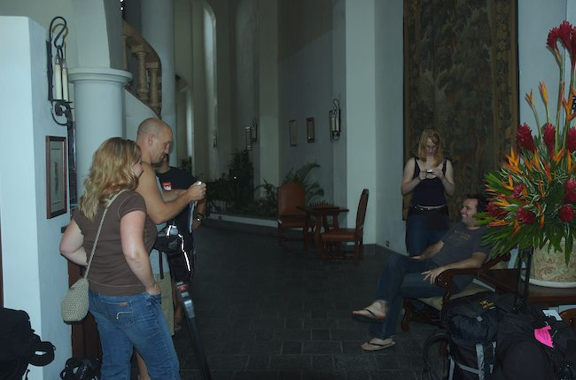

Cocos Island 2006
Index
1 of 58
Next
Image 1
Rating: 2
Badges: Adjusted Keyword
Aperture: f3.8
Shutter Speed: 1/60
Exposure Bias: 0ev
Focal Length (35mm): 36mm
Focal Length: 24mm
Keywords: Costa Rica
Name: Costa Rica 2006-08-27 093800AM
Image Date: 8/27/06 10:38:00 AM GMT-06:00
ISO Speed Rating: ISO200
File Size: 5.31 MB
Master Location: Costa Rica 2006-08
